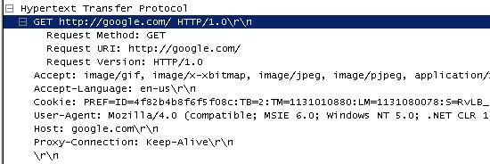

This article is intended for network administrators and internet users. It shows how users can bypass the firewall to get access to the restricted internet sites. This article is just an overview and does not cover technical details
Background
Most of us have been using emails since long. At least the software engineers do. Accessing your emails is not a big deal, until you are restricted. Well this does happen in many corporates. Once you are restricted to do so, what would you do? You may say: “I’ll access that from the cyber-cafe/home later in the evening”
Corporates or institutions imply these rules to increase productivity and/or maintain confidentiality.
Practically speaking, for a developer, the network or system administrators cannot deny access to all the sites. Most of us use Google, and require help from many linked sites. But a network admin can definitely identify and restrict mail sites like “mail.yahoo.com” or “gmail.com”.
The problem
How do they do these? All the sites are accessed by you through a proxy/firewall server like the Microsoft ISA server. The HTTP request strings are identified and based on these strings; the sites are blocked (and might be logged).
The following is a screenshot from a famous network-protocol analyzer (Ethereal)

There is temporary work-around to the situation like having a Remote-Desktop connection to a PC where the internet is accessing, etc. But these don’t work for long.
What if we could have a proxy over the net that will take our requests and fetch the response for us? Say “proxy.net” is one such server. We can configure this server address and ports in our browser settings and send a request to them. But will that solve our problem? No. That proxy setting will not change the HTTP request string.
The solution
We must have a way that the request is encrypted before it passes through the company’s firewall. Similarly, to have more privacy on what we are actually seeing, we also want to have the response sent to us in an encrypted form. At our end, we will encrypt the request and decrypt the response. Similarly, at the remote proxy server end, it will decrypt the request and encrypt the request. This concept is called tunneling and very well used in VPN (Virtual Private Networks).
So there is a possibility that some of you create a VPN connection to the remote network to access the internet through a completely different network (That network must have internet access). But this is not a feasible solution for everybody.
There are some web-application-proxy services that allow you to do this. “MegaProxy.com”, “Guardster.com”, etc. But your network admins can block these sites too (once they get an idea about that). You need to pay to access email through these sites.
Implementation
Tunneling is a great idea, and I started a search on how this could be put to real implementation. Initially, I started searching on how such an application can be made, but later I found many such packages that implement this.
The best and famous of those (not the most efficient) was “Tor”. It is an anonymous internet communication system that is based on onion-routing.
Tor is itself a network of virtual tunnels. Tor creates a circuit for accessing the internet. The good thing about it is that it will create new circuits. This keeps you anonymous over the internet all the time. More details about Tor can be found at: http://tor.eff.org/overview.html.en
Along with Tor, I also found JAP (Java Anon Proxy). Details about JAP can be found at: http://anon.inf.tu-dresden.de/index_en.html
I find Tor as technically superior to JAP in terms of keeping anonymity. Tor is quite difficult to install, and takes a lot of time to get a good circuit (many times I received a timeout). Comparatively JAP is very easy to use. Tor recommends the use of Privoxy to avoid DNS leaks. Well, this is important in case of true anonymous surfing, but it does not fit scenario I required. Tor and JAP are free to use. JAP may charge some fee once it gets out of research mode.
If we cannot break the rules, we can definitely bend the rules to our satisfaction. Technology has its own good and bad use. It’s up to the users on whether they use it ethically.
I am not any networking expert. Please do not hesitate to contact me to if I am incorrect at any point
Happy hacking!